Items
General Items:
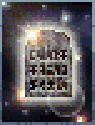
Tablet of Truth:Gives Hints (Only on Easy/Very Easy modes).
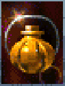
Herbal Healer:Restores 50% Health.
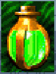
Herbal Booster:When Combined with an Herbal Healer, can make a "Boosted Healer".
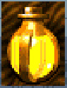
Boosted Healer:Made from combining "Herbal Healer" and "Herbal Booster". Recovers 100% of Health.
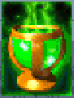
Urn of Vitality:Restores 100% Health.
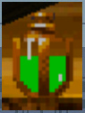
Urn of Immortality:Extra Life. (Non-Inventory)
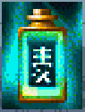
Dit Dow Formula:Temporarily reduces damage taken and improve health potion effect.
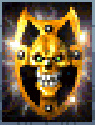
Shield of Invincibility:Temporary Invincibility.
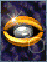
Eye of Invisibility:Temporary Invisibility, effect lasts about 25 seconds.
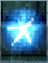
Cold Regenerator:Restores 100% Ice Ability. (Non-Inventory)
Level Specific Items:
Level 1 - The Shaolin Temples:
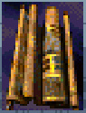
Map of Elements:Created by a Shaolin Monk who journeyed deep into the Himalayan Mountains hundreds of years ago. It is believed to lead the way to the great hidden temple in the mountains. This temple is said to be guarded by four immortal guardians and holds the key to treasure unseen by mortal man!
Level 2 - The Wind Element:
Keys:
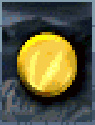
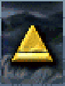
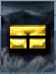
Level 3 - The Earth Element:
Keys:
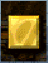
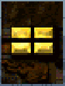
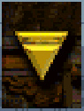
Level 4 - The Water Element:
Keys:
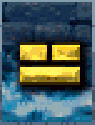
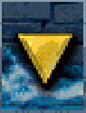
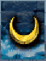
Level 5 - The Fire Element:
Keys:
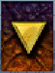
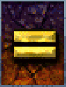
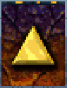
Level 6 - The Prison of Souls:
Keys:
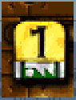
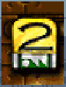
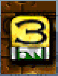
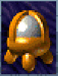
Urn of Strength:Temporary Superhuman Strength Increase. (Used on Shinnok's Statue)
Level 7 - The Bridge of Immortality:
Keys:
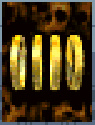
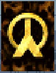
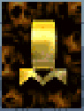
Level 8 - Shinnok's Fortress:
Keys:
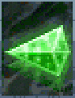
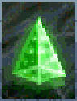
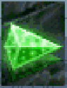
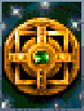
Shinnok's Amulet:Harnesses the power of the 4 elements which compose the very fabric of nature itself. Shinnok used it as a key for unbalancing the furies during his ancient battle with Earth's protector, Raiden. (Received after stealing it from Shinnok. Cannot be used.)
Scrapped?:
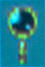
Universal Translator:Some Tablets of Truth are written in an unreadable script. Use this translator to read them.